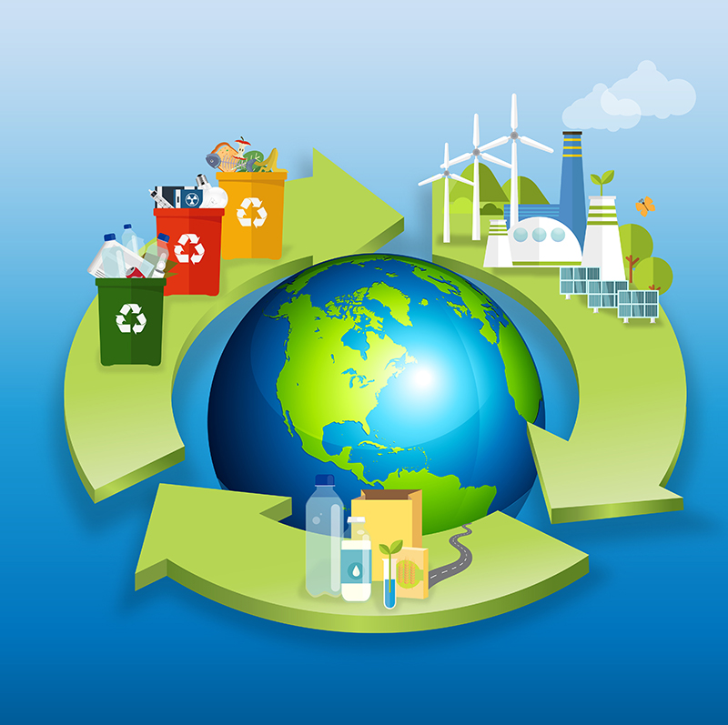
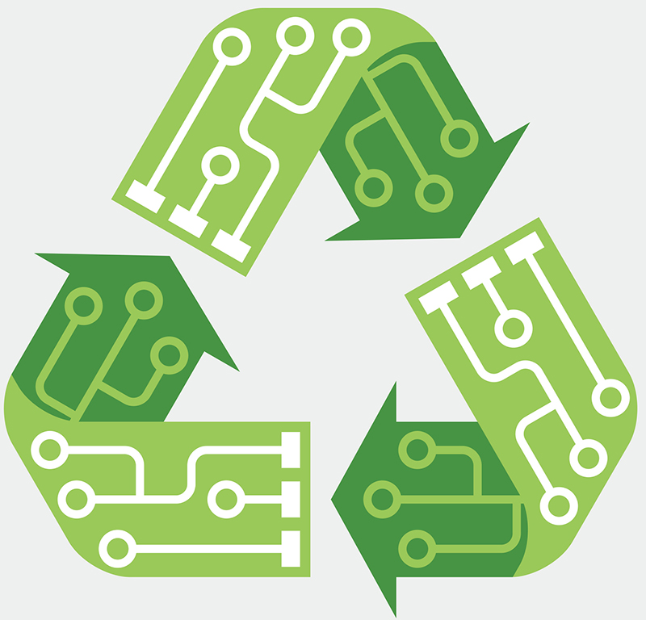
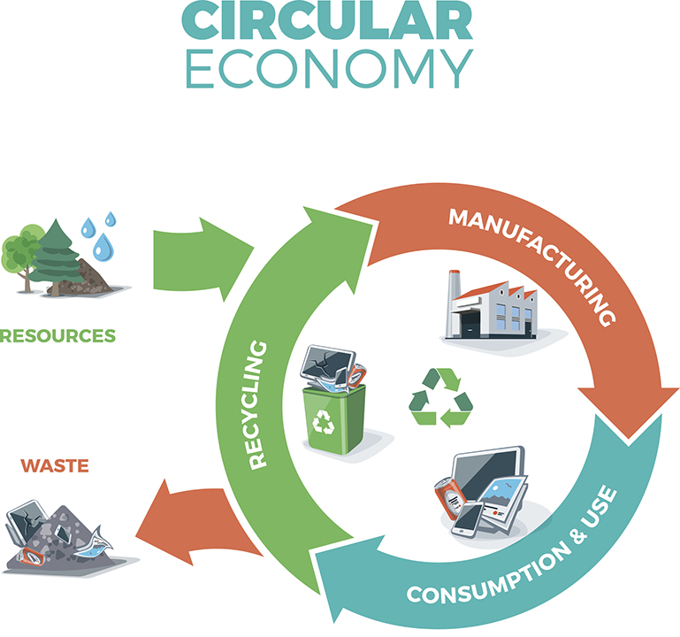
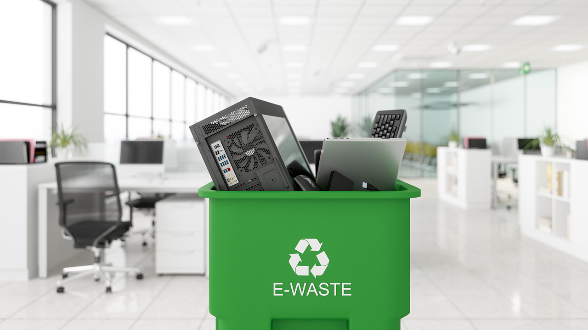
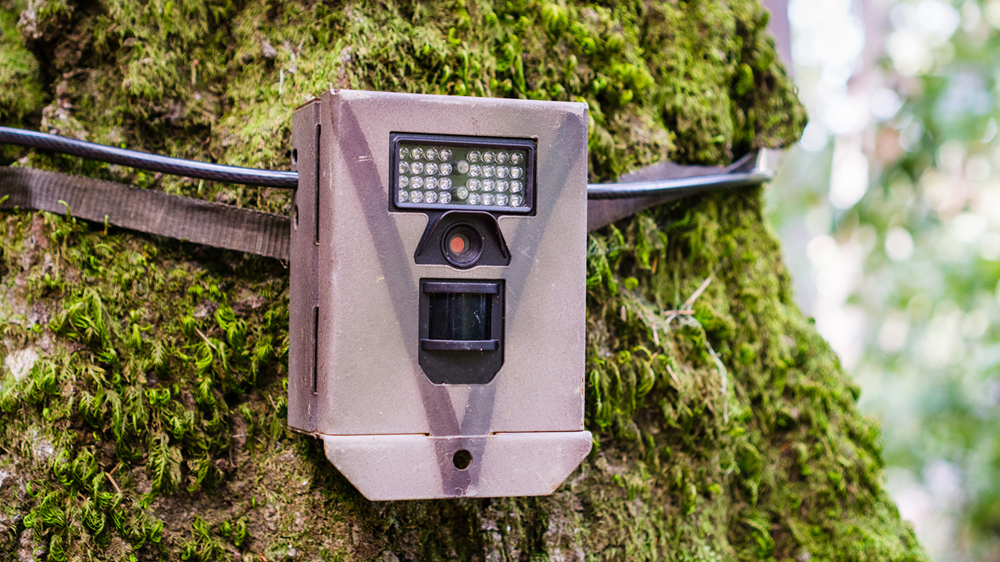
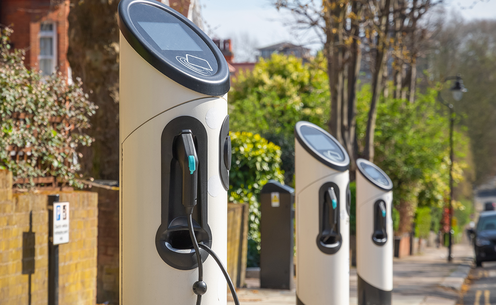

It is no surprise that IoT has emerged as the future of smart living and environmental sustainability. Technology innovation has the potential to help our global society transition to better environmental stewardship. Multiple industries are progressively investing in Internet of Things environmental sustainability initiatives to improve quality of life while safeguarding natural resources.
The challenge? Digital advancements have improved our lifestyles and our connectivity but have also increased the carbon footprint.
Research shows that data centers are responsible for 2%-5% of greenhouse gas emissions globally, and only 28% of surveyed global IT decision makers consider environmental issues in choosing data center technology. These issues have brought the need for a sustainable economy into focus.
In this article we examine how IoT can help the environment, and will pave the way for reduced global emissions and a circular economy.
What Is a Circular Economy?
The
circular economy is an emerging economic system that addresses global environmental issues with sustainable practices — specifically, those that eliminate waste and landfill. For a circular economy definition think of
a collection systems and processes that promote sharing, reusing, repairing, refurbishing and recycling of materials. The circular economy paradigm integrates best practices to reduce the use of disposables and keep materials and resources in productive use for as long as possible across all consumer, industry and manufacturing processes that involve use of renewable and non-renewable resources.
These efforts are critical in the movement to reverse the damage of the non-sustainable
linear economy where industries and individuals rapidly use and dispose of products and materials.
IoT has become the driving force behind the adoption of circular economy principles. Be it automating devices for self-monitoring or improving designs for recycling, companies leverage IoT technology for transitioning to a circular economy and reducing our carbon footprint.
IoT and Sustainability
The IoT is a system of interconnected physical
devices such as sensors, radios and routers that collect and exchange data wirelessly. Organizations across many vertical industries use IoT technology to optimize their operations to reduce environmental impact and make more sustainable decisions. See our
IoT Fun Facts blog to learn how this technology is impacting applications across Industry 4.0, healthcare, smart cities and the
green economy.
Smart technology supports
environmental sustainability through insights and automation, leading to optimized use of natural resources, minimized waste, renewable energy like wind and solar, and more
sustainable cities. All these factors also enhance the
circular economy. According to the World Economic Forum report on
Internet of Things Guidelines for Sustainability, around 85% of IoT deployments are addressing sustainable development goals. IoT innovation is truly a game-changer for the advancement of a sustainable environment.
The Environmental Impact of Digital Devices
Sustainability is about
optimizing our use of resources and reducing emissions. Businesses today are embracing energy-efficient practices to enhance their operations while reducing the environmental impact of digital devices in three ways:
- Reducing the impact of heat-producing devices through energy efficiency and heat mitigation.
- Offsetting their impact through environmentally sound practices, including use of clean energy, tree planting and increased development of heat sinks that reduce carbon emissions.
- Deploying the IoT and green technology in renewable energy and environmental stewardship projects across industries to eliminate or offset emissions with a net zero goal.
See our article,
Can 5G Help the Environment, to learn how 5G, IoT and artificial intelligence are supporting the shift to sustainable solutions that lower our carbon footprint.
How Does IoT Support a Circular Economy?
IoT devices with connected sensors can detect industrial emissions, and support manufacturing automation and proactive
management of renewable and non-renewable resources. These processes enable organizations to eliminate unexpected failures, reduce truck rolls, increase operational efficiency and improve the sustainability of smart technology.
Similarly, the data garnered by sensors helps to manage waste, automate and enhance materials recycling and drive reuse strategies in support of the circular economy.
Let’s look at three
circular economy principles driven by the IoT.
Rid Design of Waste and Pollution
This circular economy principle asks industries to rethink their supply chain processes to avoid waste and emissions, and for tech innovation to drive the
sustainability of materials use, from plastics to electronics to vehicle tires. To minimize waste, products can be designed to last longer and be refurbished for reuse. IoT-enabled systems can optimize the entire product cycle from material sourcing to dismantling and reusing products to reduce waste.
Of course, Internet of Things environmental applications extend beyond industry, and include smart home and smart building technology, better practices like use of
efficient HVAC systems, and even social benefits of IoT. Today, consumers see airports, restaurants and homeowners associations converting to smarter, more efficient devices and practices, which fuels a “green" mindset and buy-in.
IoT technology supports waste reduction and
circular economy sustainability in three ways:
- Automating processes to reduce waste and reduce emissions.
- Using sensors to detect gas, water and industrial leaks that waste resources or emit pollutants.
- Collecting data and using AI and machine learning to produce algorithms for smarter resource management.
Recycle Products and Materials to Keep Them in Use
IoT can help reduce waste with intelligent devices and management systems that help
recover, restore and recycle products and minimize trash.
IoT-enabled waste and recycling supports smarter resource use in several ways:
- Automation and AI can be deployed in industrial sorting and recycling systems to identify re-usable components and materials.
- Smart bin systems help consumers to properly sort their recycling to reduce waste and provide data that helps innovators enhance these systems.
- Trash and recycling sensors notify waste management when bins are full for efficient collection, and advanced GPS mapping optimizes truck routes.
As an example, a smart trash bin developed by
BigBelly Solar reduces the resources needed to collect trash and recyclables, with sensors and connectivity. Trash is compacted so that each bin can contain more, and pick-up services are only routed when needed, reducing the use of fossil fuels.
Natural Systems Regeneration
IoT is integrated into a range of initiatives to
regenerate natural resources, supporting initiatives from global tree planting to the health of bees and wildlife, to critical habitat and wetland redevelopment initiatives.
Here are a few examples of IoT in natural resource regeneration:
- IoT sensors and automation are at work in green tech solutions including renewable energy. For example, connected systems monitor wind direction, and turn wind turbine blades and solar panels to optimize efficiency.
- Tree sensors can help monitor “eco-physiological/biological parameters,” such as water content, tree growth and the quantity of foliage, and provide data to cloud systems accessible by researchers and tree planting programs.
- Wireless sensor networks in habitat monitoring enable habitat research and restoration organizations to monitor the health of habitats to improve outcomes on delicate ecosystems and habitats such as sea bird nesting sites.
Examples of the Internet of Things’ Environmental Applications
Let’s look at some additional IoT environmental impact and sustainability examples.
Smart Agriculture and Water Management
Smart agriculture and Internet of Things water management projects optimize resource use in farming with the use of sensors and smart devices.
- JAIN Irrigation, Inc. develops IoT irrigation solutions to address water usage concerns of famers, homeowners associations and golf courses. JAIN systems use metrics like soil composition, crop type and weather conditions to determine upcoming water requirements and optimize water usage.
- WiseConn developed DropControl to help farmers maximize their harvests and optimize irrigation by precisely monitoring soil moisture, wells, valves and weather stations, resulting in up to 30% water savings.
- Ranch Systems’ solutions use wireless sensors and controllers to monitor conditions and launch processes to efficiently apply water and fertilizer, control pumps and engines, and send frost and heat alerts. Together, these optimize operations, reduce water use and limit the time employees spend driving across acreage in fuel-burning vehicles.
Clean Energy Production
Clean energy and renewable energy production focus on green technologies like wind, solar and hydro power. Many businesses have emerged as IoT innovators, developing smart methodologies for renewable energy production and efficiency.
Here are a few projects demonstrating the impact of technology in sustainable development:
- Nextracker provides world-class clean energy solutions such as solar trackers to optimize solar use and boost power production, In addition to solar trackers, the company supports utility-scale projects with advanced data monitoring and analytics.
- Devergy is an energy services company in Tanzania that provides affordable and reliable energy to low-income people in rural villages not connected to the power grid.
- New Sun Road develops data-driven solutions for renewable energy-based power systems using IoT, which can then be used to provide clean energy.
Energy Use Reduction
Optimizing energy use in homes, businesses and transit systems, and using energy-efficient smart devices, can dramatically improve energy efficiency and sustainability. For example, multiple studies on smart home environmental impact demonstrate that automation — from use of thermostats to light sensors — can reduce carbon footprint, especially as these systems improve in efficiency.
Here are three companies that work with Digi to leverage IoT for energy use reduction:
- E-GEAR of Hawaii developed an innovative Energy Management Controller to help homeowners, business owners and utilities optimize use of energy captured from photovoltaic cells and other alternative-energy sources.
- Reborn Electric of Santiago, Chile converts diesel-engine buses to zero-emission electric power vehicles, which helps to dramatically reduce air pollution in the city while extending the service life of the vehicles.
- Infinitum Electric of Texas built a smarter, more efficient HVAC motor. With 53% of the world’s energy consumed by traditional electric motors, Infinitum aims to reinvent electrification with new PCB stator technology for more environmentally responsible electric motors and generators.
Infrastructure
IoT enables
smart infrastructures and sustainable cities in many ways, including
smart city lighting, water use management and infrastructure for electric vehicle charging. Here are three such examples of smart
infrastructure projects:
- AddEnergie of Quebec, Canada develops, manufactures and operates electric vehicle charging for market segments such as smart cities and the public sector. The company provides the charging infrastructure for the Electric Circuit and the VERnetwork™, the two largest charging networks in Canada.
- Brown and Caldwell of California helps municipalities, private industry, and government agencies overcome water-related environmental challenges. Their data-driven infrastructure solutions for water and wastewater management measure compounds for optimal treatment and lower environmental impact.
- Enlight of Portugal develops smart city devices including street light controllers, sensors and meters. Enlight’s street lighting solutions provide photo-sensors to measure dawn/dusk light (or adverse weather) and dim or raise lights for optimal energy efficiency.
How IoT Can Help the Environment and Bolster a Circular Economy
As we’ve seen from the examples, global enterprises and a vast range of industries are using IoT technologies to deploy
automation and resource management projects. Together these initiatives improve energy efficiency, reduce resource use and support the circular economy. For example:
- Data collected by IoT sensors and cameras provides analytics for predictive maintenance to prevent equipment failures before they happen, improving longevity of products and parts.
- IoT-enabled manufacturing processes today support products designed for recycling and reuse, and make it possible to connect the global marketplace for re-usable materials.
- Innovation in IoT, AI and automation will ultimately solve the problems of plastics, disposables and inefficient recycling through technology-driven improvements in sorting, composting and reuse.
Imagine when one day, every bottle or carton you purchase is made from recycled or compostable materials, every computer part is refurbished, and the next phase for each product we use is a new use instead of a trash bin. We must actively innovate and drive toward that goal to preserve our planet, and rid our oceans and natural landscapes of plastics.
Download Digi’s IoT-Enabled and Green Technology Brief Today
IoT is pivotal for a sustainable environment and the circular economy. This is why we are witnessing a huge shift towards efficient practices and reduced environmental impact through
green technology applications.
Get our
IoT-Enabled Green Tech Guide to learn more.
Digi can support your sustainability goals with a broad portfolio of
IoT products and services for connectivity, embedded design and network management.
Contact us today to start the conversation.